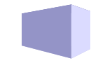

In this note, we will cover the basics of scholarly writing. That is the combination of a - narrative in text form, - possibly including images, - with cross-references throughout the text, - while giving attribution to other authors,
2.1 Narrative text with images and equations
Writing text is obvious and follows basic markdown syntax. More information about that is in the Quarto documentation.
Images
To include images, standard markdown syntax works well


Abstract Shape
I recommend working with vector graphics (.svg files). They do not require an additional raw file, which keeps the project folder clean. Inkscape is a great open-source vector graphics program.
Quarto offers more customization options to images, such as downscaling the image size or specifying the figure alignment,
However, these additions to the standard markdown syntax are Quarto-specific, which get rendered in the output files produced by Quarto, but not necessarily while displaying the raw Jupyter notebook.
Note
By adopting a large-to-small width-to-length ratio for our raw images, such as 16-to-9, we can prioritize transparency, collaboration, and reproducibility. This approach allows us to cleanly display our Jupyter notebooks in other places, such as GitHub, NBViewer, or Google Colab.
Equations
Equations follow standard LaTeX syntax, inline by $ ... $ or in full display by
$$ ... $$
For example, \(E=mc^2\), or
\[
E=mc^2
\tag{2.1}\]
Note
Sometimes, the JuptyerLab Quarto extension has problems rendering equations in my setup. I haven’t understood the exact cause of this behavior yet. Reloading the python environment did the trick (once). However, when using the LaTex align environment for more complex equations, I couldn’t get the Quarto extension to display it correctly. To get most of the other displaying features, I can recommend the MyST Jupyter extension as an alternative.
2.2 Cross-references
Cross-references help readers navigate your document by providing numbered references and hyperlinks to entities like figures and tables. Each entity needs a unique label, e.g. #fig-element, to be cross-referenced.
Footnotes can be specified using the following syntax:
Here is a footnote reference,[^1] and another.[^longnote]
[^1]: Here is the footnote.
[^longnote]: Here's one with multiple blocks.
Subsequent paragraphs are indented to show that they
belong to the previous footnote.
{ some.code }
The whole paragraph can be indented, or just the first
line. In this way, multi-paragraph footnotes work like
multi-paragraph list items.
This paragraph won't be part of the note, because it
isn't indented.
This paragraph won’t be part of the note, because it isn’t indented.
Footnotes can be a preferable way to specify links to webpages 3 to ensure that people notice and can follow the link, even if the output format is a printed PDF.
Warning
Note that the cross-referencing syntax is Quarto-specific and makes Jupyter notebooks display less cleanly in other environments. But the intrusions are not huge (imo).
2.3 Citations
Citing other scholars’ work is a fundamental part of any scholarly written piece.
Bibliography files
Quarto supports bibliography files in a wide variety of formats. For example, add a bibliography file to your document in the YAML metadata as follows,
---
bibliography: references.bib
---
The file references.bib must be in the same folder as your Jupyter notebook. In our case it contains the following,
!cat references.bib
@article{BarfussEtAl2020,
title = {Caring for the Future Can Turn Tragedy into Comedy for Long-Term Collective Action under Risk of Collapse},
author = {Barfuss, Wolfram and Donges, Jonathan F. and Vasconcelos, V{\'i}tor V. and Kurths, J{\"u}rgen and Levin, Simon A.},
year = {2020},
journal = {Proceedings of the National Academy of Sciences},
volume = {117},
number = {23},
pages = {12915--12922},
publisher = {Proceedings of the National Academy of Sciences},
doi = {10.1073/pnas.1916545117},
url = {https://www.pnas.org/doi/abs/10.1073/pnas.1916545117},
urldate = {2022-03-10},
copyright = {All rights reserved}
}
@article{Barfuss2022,
title = {Dynamical Systems as a Level of Cognitive Analysis of Multi-Agent Learning},
author = {Barfuss, Wolfram},
year = {2022},
journal = {Neural Computing and Applications},
volume = {34},
number = {3},
pages = {1653--1671},
issn = {1433-3058},
doi = {10.1007/s00521-021-06117-0},
url = {https://doi.org/10.1007/s00521-021-06117-0},
urldate = {2023-03-02},
copyright = {All rights reserved}
}
Citations syntax
Citations go inside square brackets and are separated by semicolons, e.g.,
very important finding [see @BarfussEtAl2020, pp. 2-3; also @Barfuss2022, Sec. 1]
Barfuss, Wolfram. 2022. “Dynamical Systems as a Level of Cognitive Analysis of Multi-Agent Learning.”Neural Computing and Applications 34 (3): 1653–71. https://doi.org/10.1007/s00521-021-06117-0.
Barfuss, Wolfram, Jonathan F. Donges, Vítor V. Vasconcelos, Jürgen Kurths, and Simon A. Levin. 2020. “Caring for the Future Can Turn Tragedy into Comedy for Long-Term Collective Action Under Risk of Collapse.”Proceedings of the National Academy of Sciences 117 (23): 12915–22. https://doi.org/10.1073/pnas.1916545117.